Abstract
FurReal is a real-time hair and fur simulation and rendering project focused on balancing stability, visual quality, and performance. We represent each strand as a particle chain and enforce inextensibility with Follow-The-Leader style projection. The system supports gravity, damping, wind, user interaction tools, and collision handling against sphere/capsule/ellipsoid style proxies. We implemented both CPU and CUDA simulation paths and several rendering modes, from debug visualizations to dense fur ribbons with stylized strand shading. Our final system supports interactive grooming-style controls and scalable strand counts while maintaining plausible strand motion.
Technical Approach
1) Simulation Model and Integration
Hair is modeled as guide strands, each as a chain of particles integrated with Verlet-style updates. We apply gravity and external forces, then project constraints from root to tip to preserve segment lengths. This follows the core ideas in Müller et al. (FTL Hair/Fur), adapted to our project architecture.
2) Constraint Solvers and Runtime Modes
We implemented both FTL-style and DFTL-style solver modes and made them runtime-selectable. This allowed side-by-side evaluation of stability/performance behavior without restructuring scene code. We also kept debugging modes (debug lines, guide lines, chain views) active through development to isolate solver artifacts quickly.
3) Root Attachment and Collision
Root particles are attached using local coordinates on mesh-linked proxies so hair remains anchored as objects move. Collision handling uses simplified proxy geometry (spheres/capsules/ellipsoids/custom proxies) to avoid full mesh collision cost while preserving believable contact behavior.
4) Guide/Follower Fur Representation
We simulate sparse guide strands and interpolate dense follower strands for volume. This significantly reduces simulation cost while still producing full fur coverage. We tuned interpolation weights and spacing to reduce popping and preserve shape coherence under fast motion.
5) Rendering Modes and Shading
Our renderer includes multiple modes: debug lines, guide lines, FTL chains, and fur ribbons. Final appearance uses stylized strand/ribbon shading with root-to-tip variation and tunable highlight behavior for better depth and motion readability.
6) Hair-Hair Interaction and Forces
We added approximate density-based hair-hair effects (repulsion/friction style behavior) and interactive force tools including brush/comb/wind/circular wind modes. These controls provide direct manipulation and improve the visual richness of motion.
7) CUDA and Optimization
We began with an OpenGL/CPU simulation path and then migrated critical simulation work to CUDA kernels. This improved throughput for higher strand counts and enabled more interactive settings for dense scenes. Additional profiling focused on follower generation and ribbon update stages.
Challenges and Lessons Learned
The main challenge was balancing physical constraints with frame-time budgets. Dense hair makes naive interaction and collision expensive, so we relied on approximations (proxy collisions, guide/follower simulation, bulk interactions) and targeted GPU acceleration. We also learned that strong visual debugging views are essential for diagnosing instability and attachment errors quickly.
Results
Final Visual Outputs
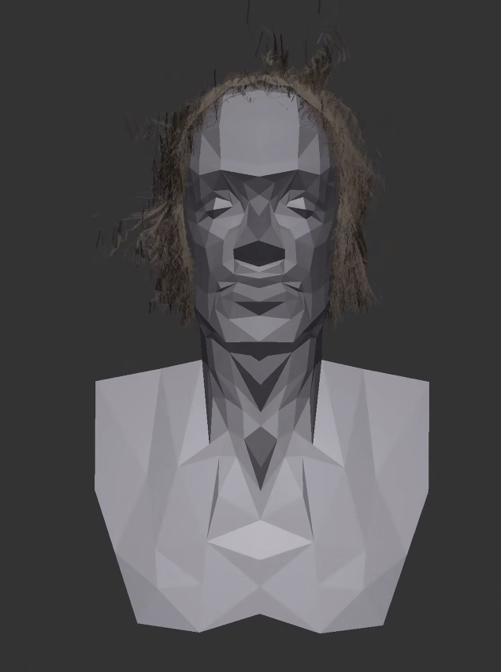
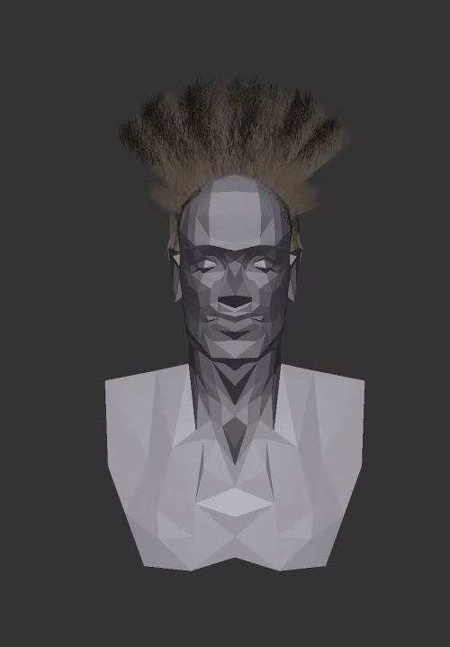

Render Mode Comparison
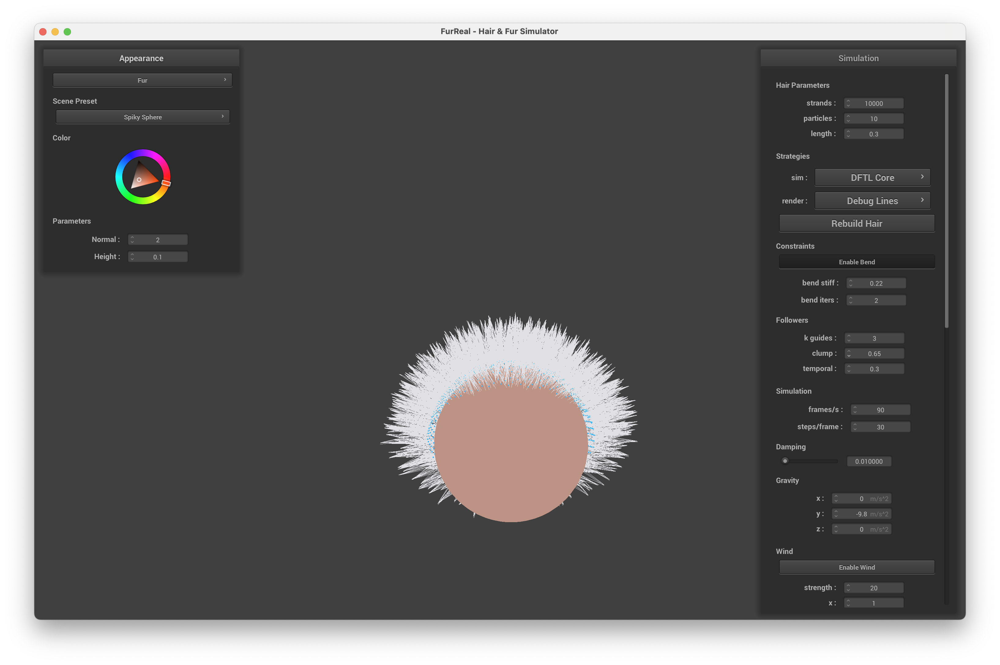
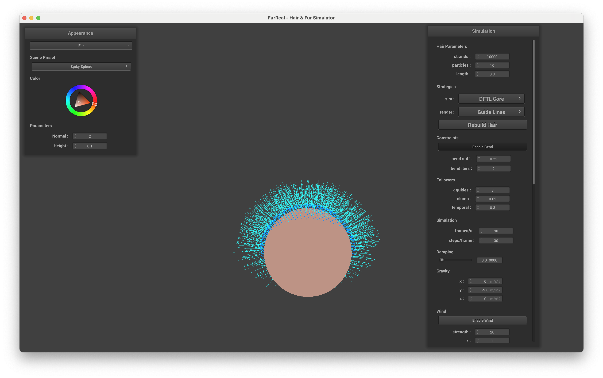

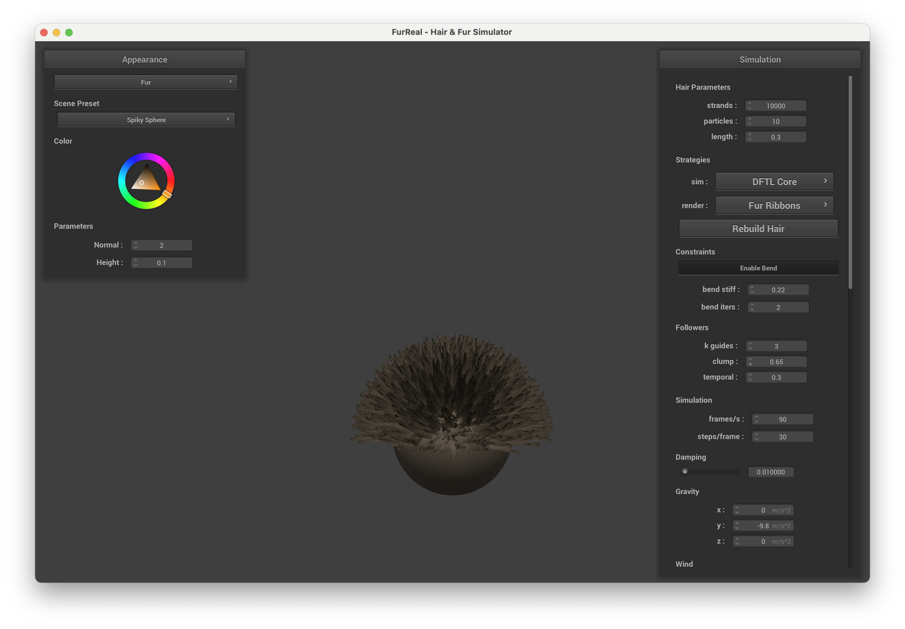
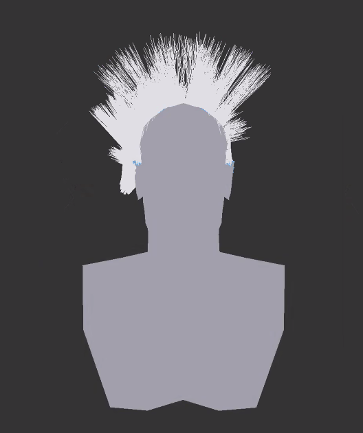
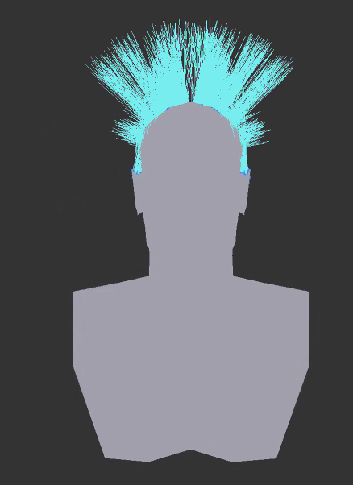
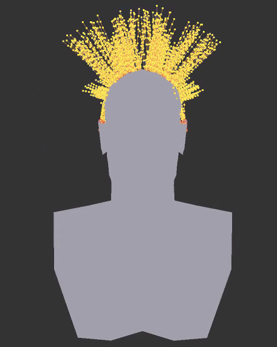
Scene Coverage
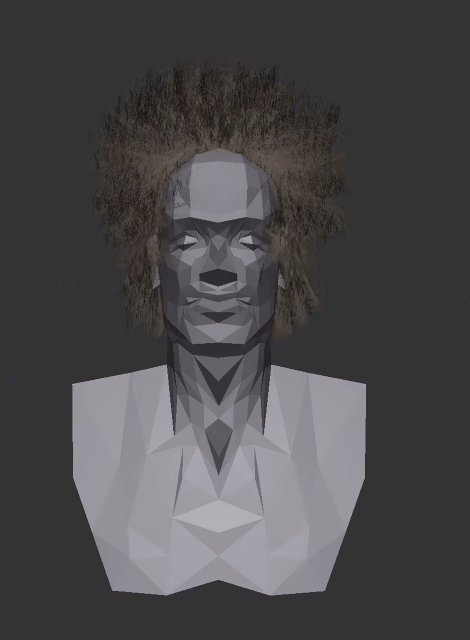
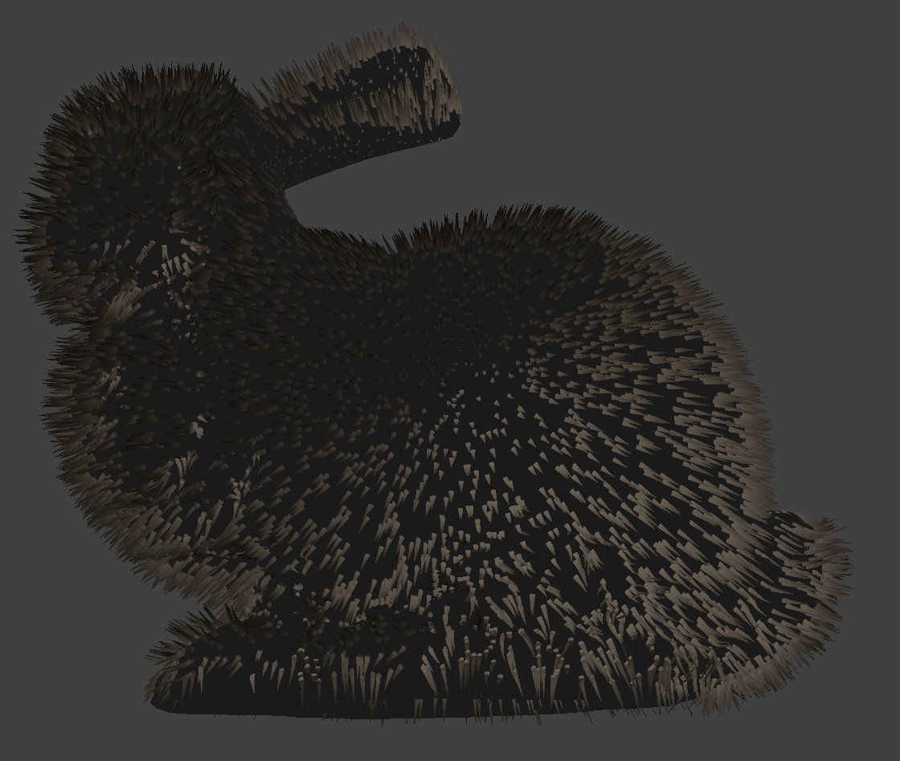
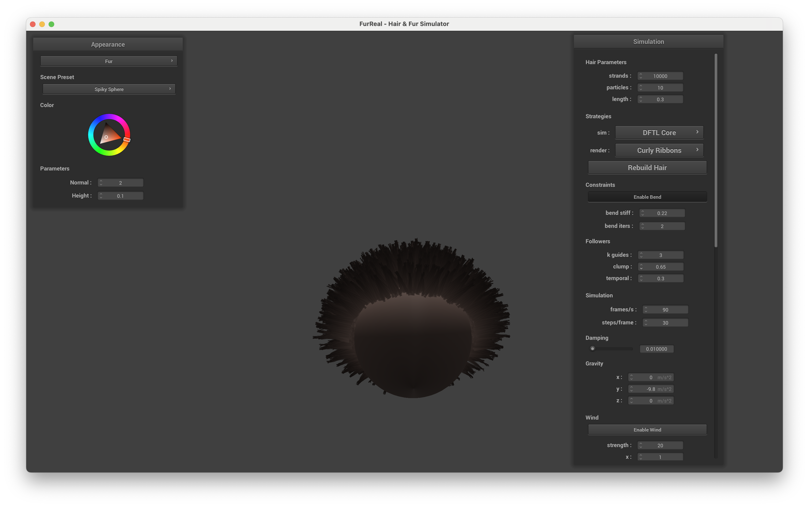
Interaction and Dynamics
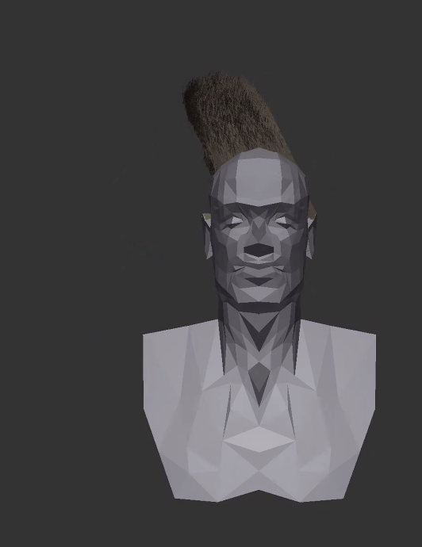
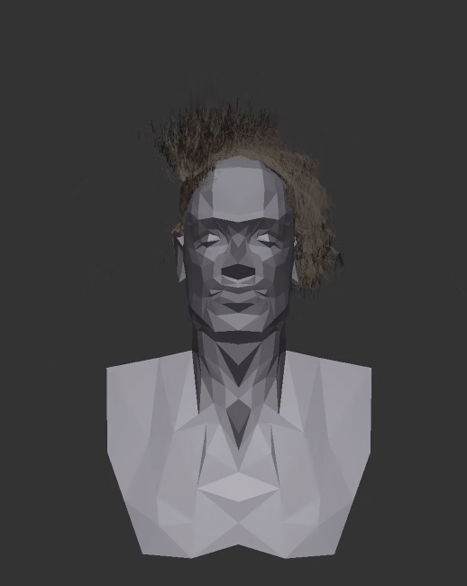
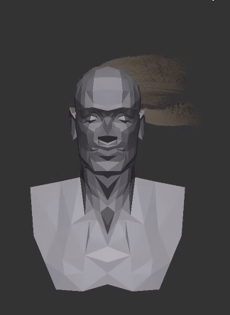
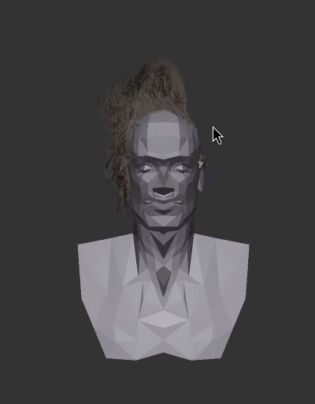
Video and Demo
Drive Folder with Slides and Video: https://drive.google.com/drive/u/1/folders/1lOwFnaciiNRx1MHACNAaNIxCv0uPZRnA?usp=sharing
Showcase clips of the final interactive system.
References
- 2 Human Head Basemeshes (OpenGameArt): https://opengameart.org/content/2-human-head-basemeshes
- Generic Rabbit .obj (OpenGameArt): https://opengameart.org/content/generic-rabbit-obj
Contributions
- Roshan Parekh: Hair/fur rendering updates, shader/look-dev tuning, result visualization support.
- Yash Kodali: FTL/DFTL simulation implementation, GUI/runtime mode controls, integration and writeup support.
- Spencer Nelson: CUDA kernel implementation and GPU performance optimization.
- Hetvi Patel: Circular wind interaction, model rendering setup, documentation/writeup contributions.